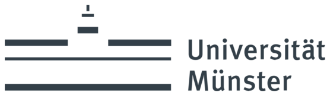
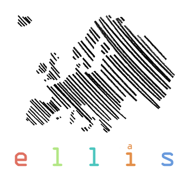
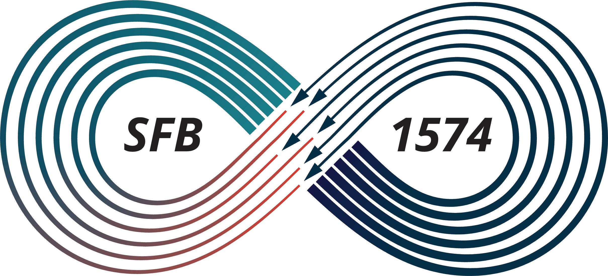
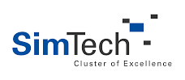
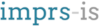

News
Two papers accepted: one at NeurIPS on better placement of adapters across neural network layers for image-to-video transfer, and one at WACV on privacy in medical foundation model embeddings. Congratulations to Thinesh and Malte! 🎉
October 2026
New Group in Münster
I joined the University of Münster and am leading the newly established Multimodal Machine Learning and Assistive Computing (ml:ac) group.October 2026
Our paper on spectral adapters for fine-grained video understanding was accepted to CVPR 2026. Congratulations to Thinesh and Constantin! 🎉
February 2026
Our DriveX @ CVPR 2026 was again accepted at CVPR 2026.
I will also serve as Program Chair at GCPR 2026 and Associate Chair at VISAPP 2026.
December 2025
Our IEEE ITSC Paper was selected among the Top 5 finalists for the Best Student Paper Award. Congratulations, Thinesh! 🎉
November 2025
New Chair & Group
I joined the University of Hildesheim as Full Professor for Machine Learning and am establishing the Intelligent Assistive Systems group. 🎉September 2025
ICRA 2024 Keynote Talk
I gave a keynote at the ICRA Long-term Human Motion Prediction Workshop. Thank you to the organizers!May 2024
About Me
Research
Welcome! I am a full professor at the University of Münster, where I lead the newly established Multimodal Machine Learning and Assistive Computing (ml:ac) group. Our work spans both theoretical/methodological and application-driven research in deep learning, computer vision and multimodal recognition. On the methodological side, we develop new learning principles and algorithms for resource- and data-efficient deep learning, including uncertainty/OOD handling, incremental learning in open-world settings and multimodal fusion. We are also very interested in Parameter-efficient Adaptation (PEFT) of foundation models. On the applied side, we develop methods for impactful real-world problems in assistive systems, autonomous driving, robotics, and industrial (and increasingly medical) scenarios. Before joining Münster, I was full professor at the University of Hildesheim and, before that, assistant professor at the University of Stuttgart. I am also a member of the European Laboratory for Learning and Intelligent Systems (ELLIS). Core topics include:- Deep Learning, Computer Vision and Multimodal Recognition
- Multimodal and Multiscale Perception of Humans (Activities, Intentions, Emotions and Beyond)
- Uncertainty-aware and Interpretable Recognition
- Open Set and Open Domain Recognition, OOD Settings
- Resource- and Data-efficient Recognition
- Simulation- and Knowledge-enhanced Learning
- Parameter-efficient Adaptation of Foundation Models
- Applications for Intelligent Vehicles, Robotics, Human Assistance (e.g., Computer Vision for the Blind), Health Monitoring, Physiological Analysis and Medical Diagnostics
Team
Our group is based at the University of Münster. Some PhD students continue their work at the University of Hildesheim, the University of Stuttgart and in industry.
University of Münster
- Alina Roitberg – Professor
- Clara Wigger – Administration
- Sarvenaz Babakhani – PhD student. Deep learning on physiological biosignals, e.g., metabolic rate estimation.
- Thinesh Thiyakesan Ponbagavathi – PhD student, joining in Münster soon (currently on an internship at Amazon). Parameter-efficient image-to-video transfer of foundation models, fine-grained video understanding and driver monitoring.
University of Hildesheim
- Sebastian Greiner – PhD student. Zero-shot driver activity recognition.
University of Stuttgart
- Malte Sönnichsen – PhD student. Privacy in machine learning, e.g., patient re-identification in medical foundation model embeddings and what human attention data reveals.
- Stefan Geyer – PhD student (co-supervised with Mathias Niepert). Uncertainty-aware deep learning, open-set recognition and generative models.
Industry
- Sarvenaz Sardari – PhD student at Mercedes-Benz. Human-understandable visual recognition for industrial inspection in car manufacturing.
Short CV
- Since October 2026: Full Professor, University of Münster. Head of the Multimodal Machine Learning and Assistive Computing (ml:ac) group.
- September 2025 – September 2026: Full Professor (W3) of Machine Learning, University of Hildesheim. Head of the Intelligent Assistive Systems group.
- Since August 2023: Faculty member of the International Max Planck Research School for Intelligent Systems (IMPRS-IS).
- June 2023 – August 2025: Tenure-Track Assistant Professor – Autonomous Sensing and Perception Group, University of Stuttgart.
- April 2023 – May 2023: Visiting Researcher – Chair for Sustainable Transport Logistics 4.0, Johannes Kepler University Linz, Austria.
- April 2021 – May 2023: Postdoctoral Researcher – Lead of the Activity Recognition Group at CV:HCI.
- PhD: Karlsruhe Institute of Technology (summa cum laude), April 2017 – April 2021. Topic: "Uncertainty-aware Models for Deep Learning-based Human Activity Recognition and Applications in Intelligent Vehicles." Referents: Prof. Dr.-Ing. Rainer Stiefelhagen (KIT, IAR) and Prof. Dr. Mohan Trivedi (University of San Diego). IEEE ITSS Best Dissertation Award 2021 (second prize). Manuscript available upon request.
- PhD internship: Facebook Zurich – Computer Vision for AR/VR, September 2020 – November 2020.
- Consultant: MHP – A Porsche Company, Big Data & Analytics, 2016 – 2017.
- M.Sc. in Computer Science: Technical University Munich, 2013 – 2015.
- Student Assistant: fortiss GmbH, developing human-robot interfaces for industrial robotics, 2014 – 2015.
- Erasmus studies: Chalmers University of Technology, Gothenburg, Sweden, 2012 – 2013.
- B.Sc. in Computer Science: Technical University Munich, 2009 – 2012.
Scholarships & Awards
- Top 5 finalist for the Best Student Paper Award for our IEEE ITSC Paper, Nov 2025.
- Elite program for PostDocs of the BW Foundation (accepted for 2023) – Baden-Württemberg Foundation, Dec 2022.
- CyberChampions Best Interface Design Award (with the startup DishDetective, initiated from our practical course at KIT and supported by EXIST, see also this interview), 2022.
- Best Dissertation Award (first prize) – IEEE ITSS Germany PhD Dissertation Award, June 2022.
- Best Dissertation Prize – KIT Faculty of Computer Science, donated by the Erika and Dr. Wolfgang Eichelberger Foundation, June 2022.
- Helmholtz Doctoral Award – yearly Helmholtz Doctoral Prize for mission-oriented research in the field "Information", Apr 2022.
- KIT Doctoral Award – yearly prize awarded by KIT to outstanding doctoral researchers, Dec 2021.
- Best Dissertation Award 2021 (second prize) – IEEE Intelligent Transportation Systems Society (ITSS), Sep 2021.
- Best Student Paper First Runner Up Award – Intelligent Vehicles Symposium (Paper: "Open Set Driver Activity Recognition"), Jan 2020.
- ECCV Women in Computer Vision Travel Grant for the presentation "Towards Human Activity Recognition in Autonomous Vehicles", 2018.
- Deutschlandstipendium – German national scholarship for talented students, 2014.
- Google Summer of Code (Point Cloud Library project), 2014.
- School-time – multiple awards at the Ukrainian Mathematical Olympiads (7th and 8th grade).
Funded Projects
- Smart Villages – Visual Recognition of Trees. Funding: LGL Baden-Württemberg. May 2024 – April 2025.
- SFB "Kreislauffabrik für das ewige Produkt", Sub-project "Visual Perception of the Human". Funding: DFG. Apr 2024 – Dec 2027.
- EXC 2120 IntCDC: "Visual Semantic Scene Understanding for Collaborative IntCDC Wood Building System". Funding: DFG, IntCDC. Jan 2024 – Dec 2025.
- EXC 2075 SIMTECH: "Resource-efficient Domain Adaptation and Simulation-Enhanced Learning in Spatiotemporal Data". Funding: DFG, Cluster of Excellence SIMTECH. Jan 2024 – Dec 2025.
- PRIDRIVE: Driver monitoring under privacy constraints. Funding: BW Foundation Elite Program for PostDocs. Jul 2023 – Dec 2025.
Past Projects (as Member)
- SmartAge – Untersuchung intelligenter Formen von Selbstregulation und Ko‑Regulation unter Realbedingungen (Carl‑Zeiss‑Stiftung, 2021 – ongoing). Role: team member; co‑supervision of a PhD student; technical coordination of the video-based human observation work package. Web: www.smartage-heidelberg.com.
- JuBot – Jung bleiben mit Robotern (Carl‑Zeiss‑Stiftung, since 2020). Role: team member; co‑supervision of a PhD student. Web: www.kcist.kit.edu/deutsch/123_1205.php.
- CC‑King – Competence Center KI‑Engineering (2020 – 2022). Role: team member; technical coordination of the learning‑from‑simulations work package. Web: www.ki-engineering.eu.
- ESKIMO – Mit künstlicher Intelligenz die Baustelle genau im Blick (BMBF, 2020 – 2022). Role: team member; technical coordination of the computer vision work packages. Web: www.eskimo-projekt.de.
- PAKoS – Personalisierte, adaptive kooperative Systeme für automatisierte Fahrzeuge (BMBF, 2017 – 2021). Role: team member; project implementation (human observation for driver assistance). Web: www.projekt-pakos.de.




